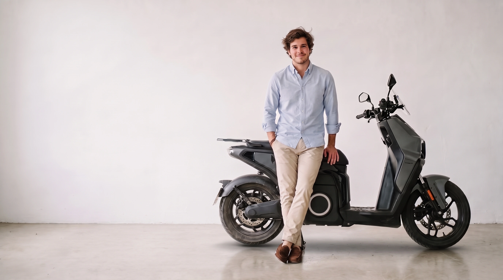
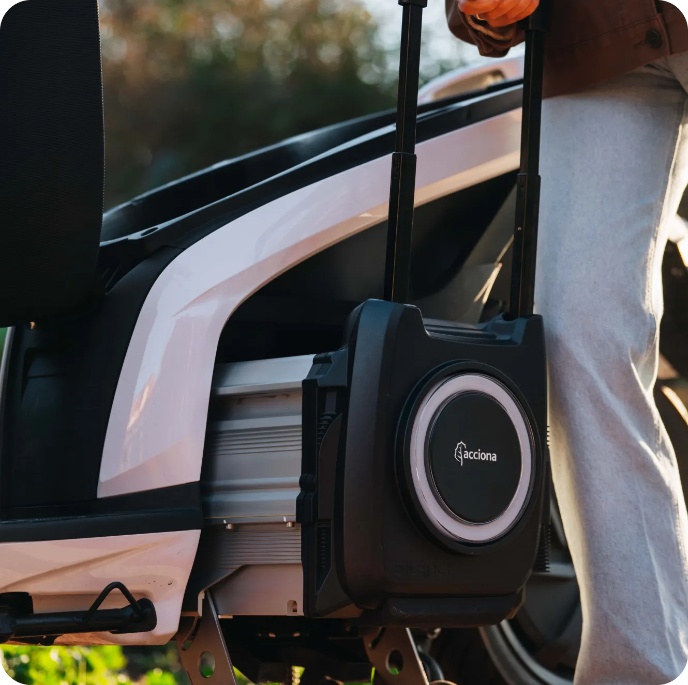

Motos y scooters
Con el carnet de coche con más de 3 años, o con el A1. Son modelos, de la naked al maxiscooter.
Ver las de carnet de coche
Plan Auto+ · hasta agotar fondos
3.490 €Te ahorras 1.458 €
Precio3.490 €
−Plan Auto+1.100 €
−IRPF 15 %358 €
Te ahorras1.458 €
*Silence S02 L3e. PVP 3.490 €. Precio final con 1.100 € de descuento del Plan Auto+ (sujeto a fondos) y la deducción del 15 % en el IRPF, que se recupera en la declaración de la renta. Según silence.eco.
Lo primero que tienes que saber
Si tienes el carnet B desde hace 3 años, o el A1, te puedes llevar cualquier moto y cualquier scooter de esta web. Sin examen y sin sacarte nada nuevo.
Con el carnet de coche con más de 3 años, o con el A1. Son modelos, de la naked al maxiscooter.
Ver las de carnet de coche¿No tienes ni el B ni el A1? Con el AM, que se saca desde los 15 años, te llevas un ciclomotor de 45 km/h.
Ver las de carnet AMEl Silence S04 de 45 km/h se conduce con el AM. El de 85 km/h, con el carnet de coche.
Ver el S04El carnet B con 3 años de antigüedad vale para motos de hasta 11 kW (15 CV) de potencia nominal dentro de España. ¿Dudas con el tuyo? Pregúntanos por WhatsApp.
Lo que más sube
Se montan a horcajadas, corren de verdad y no piden más carnet que el que ya llevas en la cartera.
Precios guía: el de venta recomendado por cada fabricante, sin ayudas. A todos se les suman 300 € de matriculación, preentrega y transporte. El precio final te lo decimos por WhatsApp en el momento.
El Silence S04 tiene techo, puertas y aire acondicionado, como un coche. Y se conduce con el carnet de ciclomotor.
Empieza por aquí
Nakeds, deportivas y trail que se llevan con el carnet de coche. Es lo que más está subiendo.
Ver las motosScooters para ir al trabajo y aparcar en la puerta. También con el carnet de coche.
Ver scootersCiclomotores de 45 km/h con el AM, desde los 15 años. La primera moto.
Ver ciclomotoresNanocars de dos plazas con puertas y aire acondicionado. Desde los 15 años.
Ver nanocarsNuestras marcas
Pincha en una marca y se abren todas sus motos, con lo que hace cada una: qué carnet pide, cuánto corre, qué potencia tiene, cuánto aguanta y cómo se carga.
No hay marcas con ese tipo de vehículo.
Precios guía: el de venta recomendado por cada fabricante en octubre de 2026, sin ayudas. A todos se les suman 300 € de matriculación, preentrega y transporte. Los marcados con * son el precio final que publica Silence con el Plan Auto+ (sujeto a fondos) y la deducción del 15 % en el IRPF, que se recupera en la renta. El precio final de cada moto te lo damos en tienda o por WhatsApp.
Potencia
En cada moto de esta web verás dos potencias. No es un lío: una decide el carnet y la otra es la que notas.
Es la potencia que la moto mantiene de forma continua y la que figura en su ficha técnica. Hasta 11 kW (15 CV) nominales se lleva con el A1 o con el carnet de coche.
Es la que entrega el motor cuando abres gas. Siempre es mayor que la nominal, y por eso una eléctrica de carnet de coche sale como sale.
Frente a una 125 de gasolina
Una 125 de gasolina no pasa de 90-95 km/h. Estas se llevan con el mismo carnet de coche: la más rápida de cada marca.
Por qué eléctrica
Haz la cuenta
Cálculo orientativo para km al mes. Supuestos: una 125 de gasolina que gasta 3 l cada 100 km con la gasolina a 1,55 €/l, frente a una eléctrica que gasta 4 kWh cada 100 km (la Silence S02 hace 138 km con 5,6 kWh) con la luz a 0,17 €/kWh.
Se carga en un enchufe normal, como el móvil. La enchufas por la noche y por la mañana está lista.
Entras en las zonas de bajas emisiones y, en muchas ciudades, tienes ventajas para aparcar.
Sin aceite, sin filtros y sin embrague. Menos piezas, menos visitas al taller.
Sales de casa a las siete de la mañana y no se entera nadie. Tampoco huele a nada.

¿Sin garaje?
En Silence, NIU y Vmoto la batería se saca y se carga en el enchufe del salón. La de Silence tiene asa y ruedas, como una maleta. En cada moto verás marcado si la batería es extraíble.
Cómo trabajamos
Para qué la quieres, cuántos kilómetros haces y dónde la vas a cargar.
Vienes a la tienda, te subes y das una vuelta. Sin compromiso.
Precio, financiación y las ayudas que haya en ese momento. Todo por escrito.
Matriculada y lista para salir, en la tienda o en tu casa. Y si un día necesita algo, nos tienes en el mismo sitio.
Depende del fabricante y de si hay stock, pero normalmente en unos 10 días la tienes.
Te la llevamos a casa, estés donde estés. El envío lo pagas tú: te decimos cuánto según tu código postal.
Las revisiones se hacen aquí, con cita previa. Normalmente la tienes de un día para otro.
Silence, Velca, Next, NIU, Zero, Ultraviolette y Vmoto. Cualquier pieza te la pedimos nosotros.
Grupo PlusAuto
Motovatio es la casa de los eléctricos de Grupo PlusAuto. Misma dirección, mismo equipo y los mismos servicios que ya conoces.
Ven a verlas